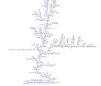

Why LaTeX?
LaTeX is arguably the premier typesetting package in the world. Knuth and Lamport have distilled for us the accumulated wisdom of generations of printers. See video discussion.Why take my advice?
Here I distill recommendations from over 30 years experience of use and abuse of LaTeX. Most importantly, as the founding editor of the electronic part of ANZIAM Journal, over two decades I have copyedited a thousand LaTeX articles written by hundreds of mathematicians and engineers. From this experience I distill for you the core flexible LaTeX methods that will serve you well.The golden path: use LaTeX logically.
Further, I base my recommendations to you on reading of many authors of writing and typesetting skills including books by Higham, Strunk, Barrass, Day, Zobel, Anderson, Wheildon, Knuth, Lamport, Gratzer, and the Australian Government Style Manual.
LaTeX has many strengths
- The LaTeX system typesets documents with line
and page breaks to maximise readability and appeal
by avoiding as far as possible poor breaks and
hyphenation.
- The defaults of LaTeX implement best practice for a
reader's comprehension of your material. Read Wendy Priestly's
Instructional typographies using desktop publishing
techniques to produce effective learning and training
materials
- LaTeX is simply the best package for documents
containing mathematics.
TeX can print virtually any mathematical thought that comes into your head, and print it beautifully.
[Herbert S. Wilf, 1986] - LaTeX is free for virtually every computer in the
world. You may download the software via a CTAN site.
- Beginners can start using LaTeX immediately with the
free online service Overleaf,
https://www.overleaf.com
- LaTeX is portable---stick to the standard
commands and everyone can read and exchange
documents: even with the future you.
- Your source file is purely alphanumeric so the
source can be read by eye or posted by e-mail with
no problems associated with different versions or
binary files.
- Logical LaTeX source empowers easy generation
of many different manifestations of the content:
your style, a colleagues style, slides for
seminars, a journal style, and abbreviated
versions, in reading formats of pdf, postscript,
html, even epub.
- Weakness: LaTeX is not usually WYSIWYG (although you can use LyX or even easier, Overleaf).
Remember that the 'X' in LaTeX or TeX is pronounced as a hard sound as in the 'ck' in 'teck'.
In a document of this size it is not possible to include everything that you might need to know. If you intend to make extensive use of LaTeX, then subsequently refer to a more complete reference. Instead this is a carefully selected introduction to the foundational elements and philosophy of using LaTeX with style.
Online is a fairly complete LaTeX2e reference (162k,html), suitable for browsing, searching or access via its index. This reference document is the most useful thing to keep handy on your disk while you become more proficient with LaTeX.
Contents
We present this website as if you have not used LaTeX before. For those who have used LaTeX, I urge you to use this approach to resynthesise your knowledge into a more powerful framework (instead of following a 'diffusion limited aggregation' that is usual when learning LaTeX). CC BY-SA 3.0, Link
Use the menu at the top-left to navigate to the following sections.
- A quick and dirty start
- Environments
- Cross referencing
- More mathematics
- Figures and tables
- Style and seminars
- Write right for readers
- Art of ties
- Use colour
- Banned LaTeX!
- and possibly more, but not yet.
Other useful information sources
- Jon Warbrick's
Essential LaTeX (177k,pdf) is a useful
introduction to basic documents.
- But for a quick introduction to mathematics you will
also need Essential
Mathematical LaTeX (267k).
- The Not so Short
Introduction to LaTeX2e (850k,pdf) by Tobias Oetiker et
al, is a more complete introduction but somewhat longer. But
I prefer An introduction to
TeX and friends (436k) by Gavin Maltby.
- Graham Williams compiled brief descriptions of each of
the many support packages and options for LaTeX. See the
vast Comprehensive TeX
Archive Network: Packages that lists and links to
over 5,000 LaTeX packages.
- The Comprehensive TeX Archives Network (CTAN sites) provides just about everything you ever wanted to know about LaTeX and all its associated software. The CTAN sites are so comprehensive that one rarely can figure out where to go to find the desired information. However, search the site and the catalogue via the Search CTAN web page.